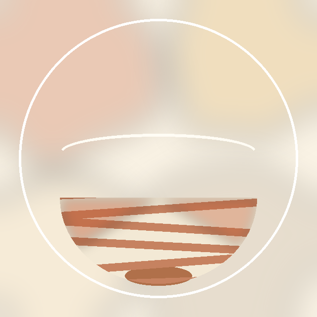
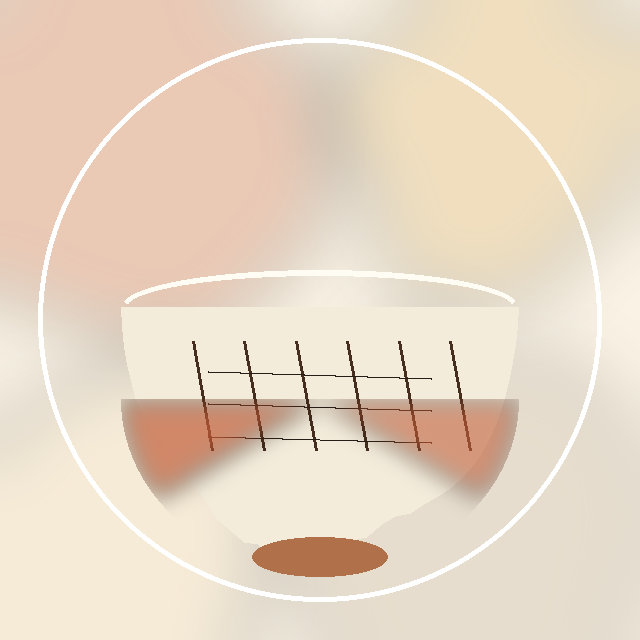

無地志野
絵や彫り文様のない、白釉のみの素朴な作行き。様式の変遷から見て、文様のない素直な作りは比較的早い時期のものと考えられています。
安土桃山時代、美濃（岐阜県）で生まれた白い焼きもの「志野焼」。その歴史・土と釉薬・種類・名品を、イラストとともにやさしく紹介します。
読み込み中…
茶人・志野宗信（しの そうしん）が美濃の陶工に命じて焼かせたのが名前の由来と伝えられています（諸説あり、史料による裏づけは限定的です）。
安土桃山時代、美濃・大萱（おおがや、現在の岐阜県可児市）の牟田洞窯などで、志野焼は最盛期を迎えます。わび茶の広がりとともに、茶碗・花入・水指・香合などに使われ、日本で初めて白い釉薬を全面にかけ、絵付けをほどこした陶器として和様の雅陶を生み出しました。国宝「卯花墻」もこの時期に焼かれたと考えられています。
桃山陶の作風は次第に廃れ、志野をはじめとする美濃桃山陶は、長らく隣接する瀬戸で焼かれたものと考えられていました。
陶芸家・荒川豊蔵が、岐阜県可児市久々利（くくり）の古窯跡で志野の陶片を発見。これにより、志野焼が瀬戸ではなく美濃で焼かれていたことが明らかになりました。この発見をきっかけに、美濃桃山陶は近代以降の陶芸家たちによって研究・再現され、現代に受け継がれています。
志野焼は美濃（岐阜県）の以下のような窯で焼かれました。
岐阜県可児市久々利から土岐市泉町久尻にかけて産出する、鉄分の少ない、やや紫がかった白土です。もぐさ（艾）のようにざんぐりとした柔らかい風合いを持ち、志野特有の温かみのある質感を生み出します。
長石を主原料とした白い釉薬を、厚くかけて焼成します。日本で初めて焼き物の全面に白い釉薬をかけた例とされ、釉のかかり方のムラや窯の中の火の当たり方によって、赤みを帯びた「火色（緋色）」や、表面に細かくひび割れる「貫入」が生まれます。これらは欠点ではなく、志野ならではの「景色」として愛でられてきました。
絵や彫り文様のない、白釉のみの素朴な作行き。様式の変遷から見て、文様のない素直な作りは比較的早い時期のものと考えられています。
もっとも一般的な志野。鬼板と呼ばれる鉄絵具で草花などの文様を描いてから、その上に白い長石釉をかけて焼きます。釉の下に淡く浮かぶ鉄絵が特徴です。
素地に鬼板を化粧がけし、文様を掻き落としてから白釉をかけたもの。掻き落とした部分が白い文様として浮かび上がり、鼠色の落ち着いた地色が生まれます。
酸化第二鉄を含む赤ラク（黄土）を掛け、鉄絵文様を描いたうえに志野釉をかけて焼いたもの。温かみのある赤い発色が特徴です。

白土と赤土を練り混ぜて成形し、志野釉をかけたもの。断面や表面に、二つの土がつくる自然な縞模様や渦模様が現れます。
※掲載画像はいずれも本アプリのために描き起こしたオリジナルのイメージイラストです。実際の文化財の写真ではありません。

日本で焼かれた茶碗のうち、国宝に指定されているのは本阿弥光悦の白楽茶碗「不二山」とこの「卯花墻」の2碗のみといわれる、志野焼を代表する名碗です。轆轤で成形したのち篦（へら）で大胆に削って形をゆがませ、厚い白釉と縁の火色（緋色）が景色をつくっています。名前は、表面の鉄絵文様を卯の花（ウツギ）が咲く垣根に見立てたことに由来すると伝えられています。
ざんぐりとした温かみのあるもぐさ土に、雪のように白い釉と赤みの発色が調和した名碗。「卯花墻」「羽衣」と並び称されることがあり、志野茶碗の格付けでは第三位に挙げられることもあります。
参考: 文化遺産オンライン、三井記念美術館、岐阜県公式サイト、美濃焼伝統工芸品協同組合 ほか公開情報を基に作成しています。歴史的な逸話には諸説あるものを含みます。